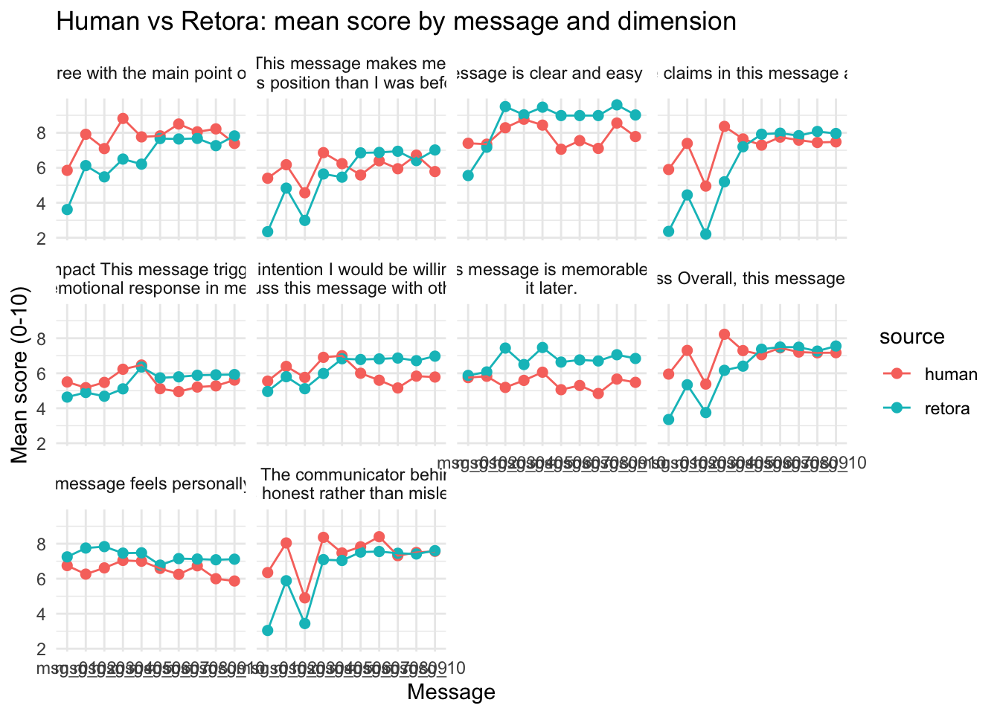
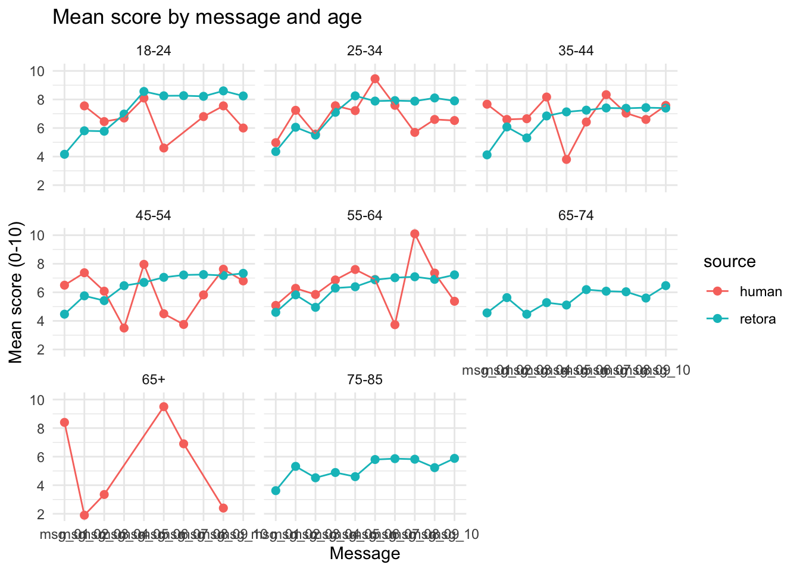
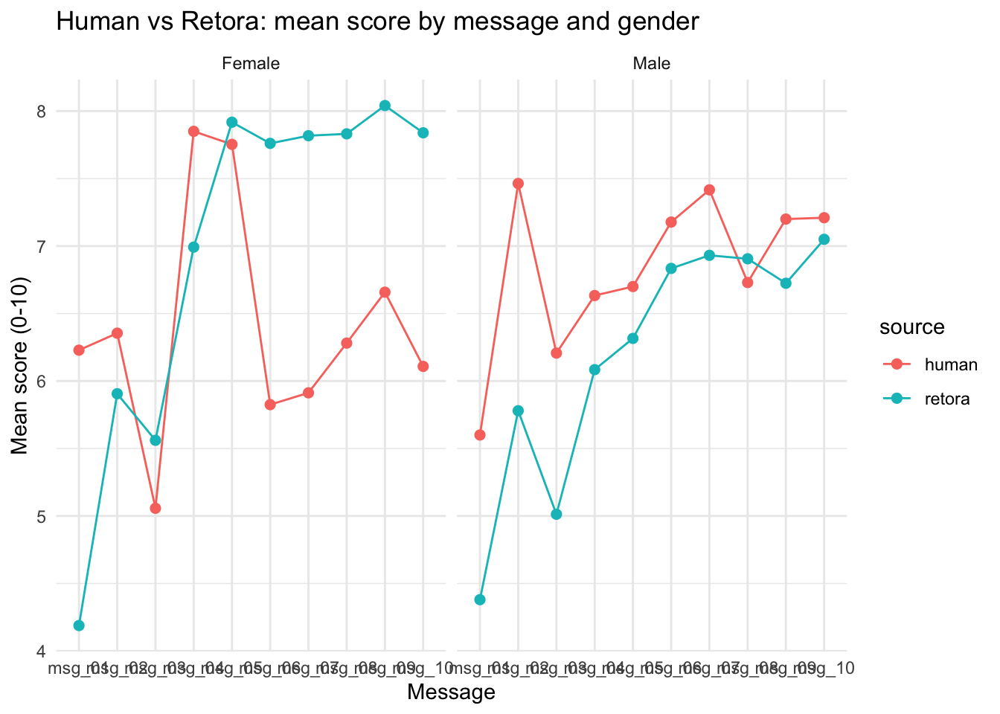
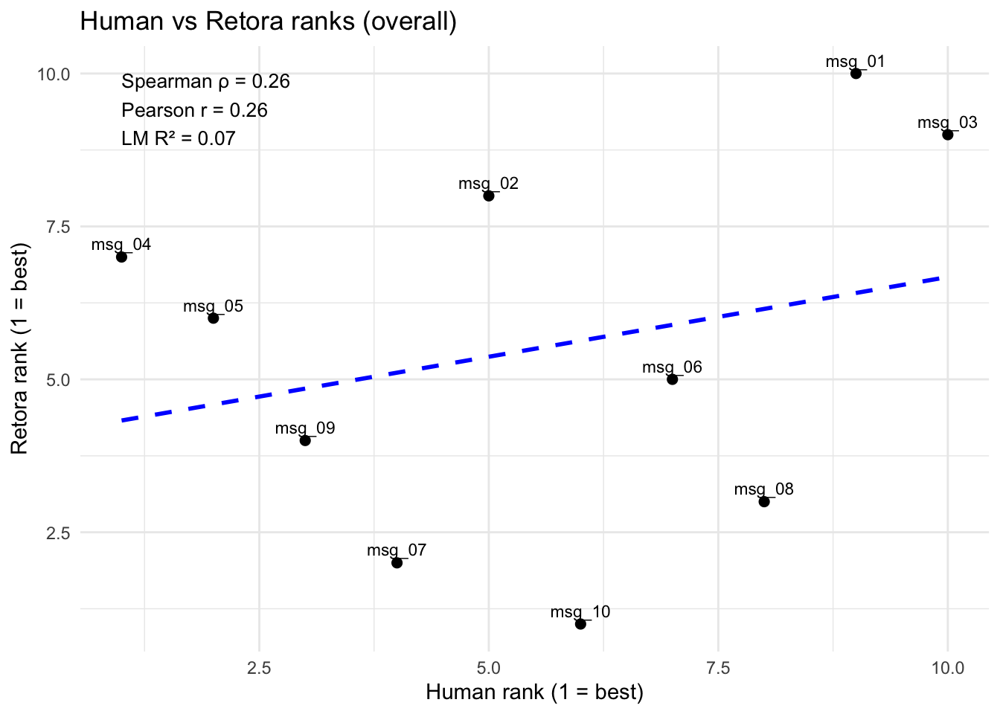
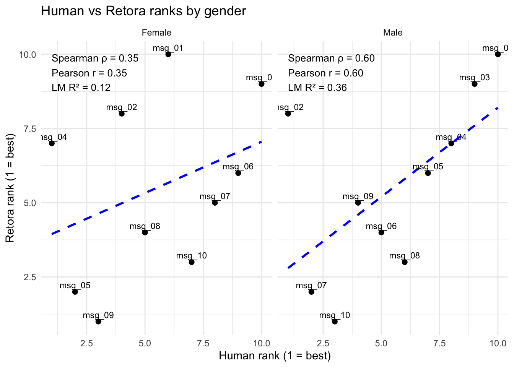
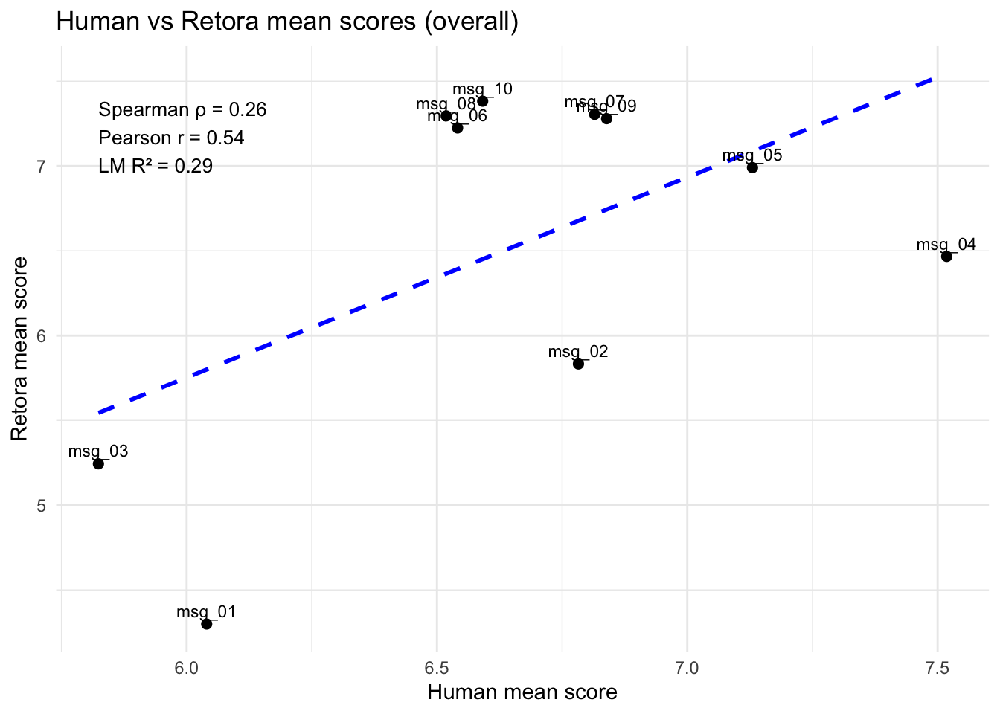
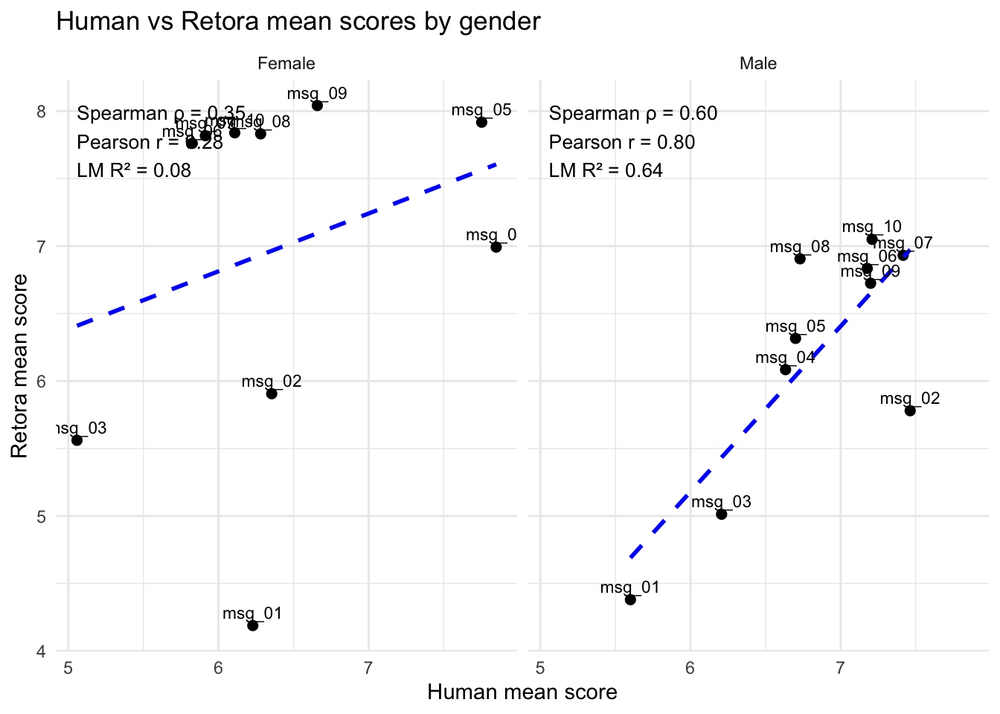
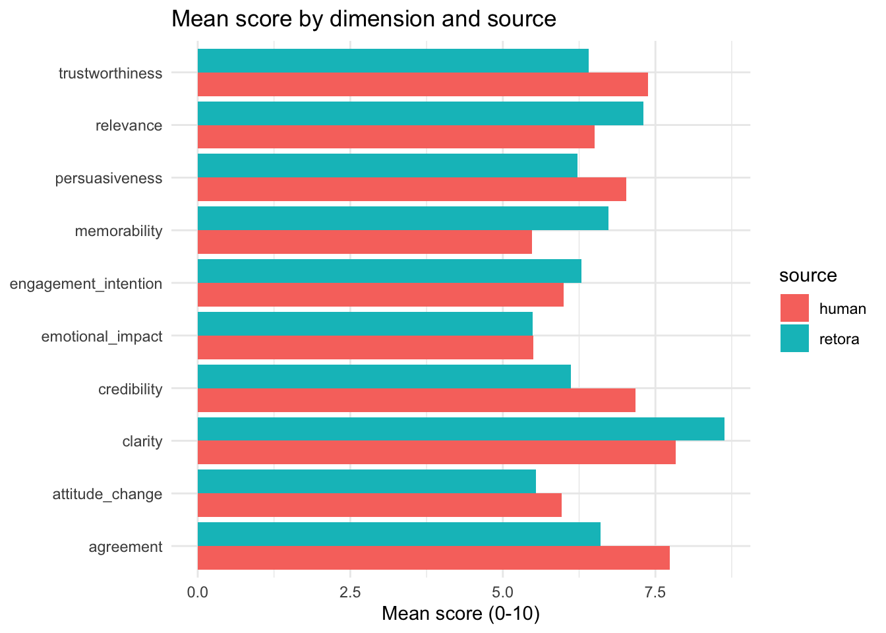

| age_label | gender_label | n |
|---|---|---|
| 25-34 | Female | 34 |
| 35-44 | Male | 28 |
| 35-44 | Female | 25 |
| 45-54 | Male | 23 |
| 45-54 | Female | 21 |
| 25-34 | Male | 18 |
| 55-64 | Male | 16 |
| 55-64 | Female | 15 |
| 18-24 | Male | 6 |
| 18-24 | Female | 5 |
| 65+ | Female | 4 |
| 65+ | Male | 3 |
| 25-34 | Prefer not to say | 1 |
| 35-44 | Prefer not to say | 1 |
Human vs Retora Message Ratings
1 Overview
This report compares human survey ratings with Retora model outputs for the same set of messages. We summarize agreement at the message level, examine patterns by demographic group, and provide dimension-level comparisons.
2 Data Sources
- Qualtrics export: retora_February 2, 2026_15.54.csv
- Retora runs: custom_feedback_runs_by_group.csv
- Message ID map: messages_surveyjs_id_map.csv
3 Prepare Human Ratings
4 Prepare Retora Runs
5 Combine Sources
| source | n_ratings |
|---|---|
| human | 1998 |
| retora | 12100 |
6 Message Summary Table (Rank Comparison)
| Message ID | Message Text | Human Rank | Retora Rank |
|---|---|---|---|
| msg_01 | To achieve carbon neutrality by 2050, the EU should strengthen climate policy by expanding renewables and also increasing fossil fuel production to stabilize emissions. A just transition is needed, but jobs should not change. | 9 | 10 |
| msg_02 | The EU must strengthen climate policy to reach carbon neutrality by 2050, but we should avoid major changes. Invest massively in renewables while keeping fossil jobs exactly as they are. | 5 | 8 |
| msg_03 | The EU must reach carbon neutrality by 2050 with stronger climate policy, but it should cost nothing and require no lifestyle changes. Invest massively in renewables while guaranteeing no higher bills and no disruption. | 10 | 9 |
| msg_04 | To reach carbon neutrality by 2050, the EU should strengthen climate policy and invest in renewables. This can be done without meaningful public spending if markets work properly and workers adapt. | 1 | 7 |
| msg_05 | The EU must impose tougher climate rules to force rapid decarbonization by 2050. Fossil industries have delayed progress too long, so they should accept the costs while renewables expand quickly. | 2 | 6 |
| msg_06 | Meeting the 2050 neutrality goal needs stronger EU climate policy: faster renewable deployment, grid upgrades, and stable investment rules. A just transition should fund retraining and targeted regional support for fossil-dependent areas. | 7 | 5 |
| msg_07 | Carbon neutrality by 2050 requires stronger EU policies focused on delivery: accelerate permits for renewables, invest in grids, and provide predictable signals for investors. To sustain support, fund retraining and transition protections. | 4 | 2 |
| msg_08 | To credibly reach carbon neutrality by 2050, the EU should strengthen climate policy through faster permitting, grid investment, and clear financing pathways for renewables. Pair this with retraining, wage support, and regional development. | 8 | 3 |
| msg_09 | The EU must strengthen climate policies to reach carbon neutrality by 2050. This requires major investment in renewables and a just transition that supports workers and regions affected by the decline of fossil fuels. | 3 | 4 |
| msg_10 | If the EU is serious about carbon neutrality by 2050, it must strengthen climate policy with execution: speed renewable permitting, modernize grids, and mobilize public and private capital. Guarantee a just transition for workers and regions. | 6 | 1 |
7 Message-Level Comparison (Overall)
| Message Text | Human Mean | Retora Mean | Human N | Retora N |
|---|---|---|---|---|
| To reach carbon neutrality by 2050, the EU should strengthen climate policy and invest in renewables. This can be done without meaningful public spending if markets work properly and workers adapt. | 7.518 | 6.467 | 220 | 1210 |
| The EU must impose tougher climate rules to force rapid decarbonization by 2050. Fossil industries have delayed progress too long, so they should accept the costs while renewables expand quickly. | 7.130 | 6.991 | 169 | 1210 |
| The EU must strengthen climate policies to reach carbon neutrality by 2050. This requires major investment in renewables and a just transition that supports workers and regions affected by the decline of fossil fuels. | 6.839 | 7.279 | 180 | 1210 |
| Carbon neutrality by 2050 requires stronger EU policies focused on delivery: accelerate permits for renewables, invest in grids, and provide predictable signals for investors. To sustain support, fund retraining and transition protections. | 6.815 | 7.305 | 200 | 1210 |
| The EU must strengthen climate policy to reach carbon neutrality by 2050, but we should avoid major changes. Invest massively in renewables while keeping fossil jobs exactly as they are. | 6.783 | 5.833 | 230 | 1210 |
| If the EU is serious about carbon neutrality by 2050, it must strengthen climate policy with execution: speed renewable permitting, modernize grids, and mobilize public and private capital. Guarantee a just transition for workers and regions. | 6.591 | 7.383 | 230 | 1210 |
| Meeting the 2050 neutrality goal needs stronger EU climate policy: faster renewable deployment, grid upgrades, and stable investment rules. A just transition should fund retraining and targeted regional support for fossil-dependent areas. | 6.541 | 7.225 | 170 | 1210 |
| To credibly reach carbon neutrality by 2050, the EU should strengthen climate policy through faster permitting, grid investment, and clear financing pathways for renewables. Pair this with retraining, wage support, and regional development. | 6.519 | 7.296 | 189 | 1210 |
| To achieve carbon neutrality by 2050, the EU should strengthen climate policy by expanding renewables and also increasing fossil fuel production to stabilize emissions. A just transition is needed, but jobs should not change. | 6.040 | 4.299 | 200 | 1210 |
| The EU must reach carbon neutrality by 2050 with stronger climate policy, but it should cost nothing and require no lifestyle changes. Invest massively in renewables while guaranteeing no higher bills and no disruption. | 5.824 | 5.244 | 210 | 1210 |

8 Message-Level Comparison by Dimension

9 Message-Level Comparison by Age

10 Message-Level Comparison by Gender (Male/Female)

11 Agreement Metrics (Message Level)
| spearman | pearson | r2 |
|---|---|---|
| 0.261 | 0.261 | 0.068 |


How to read these numbers (plain language)
- Spearman ρ: whether the two rankings move in the same order. Closer to 1 means the ordering is very similar.
- Pearson r: how straight‑line the relationship is between the two ranks. Closer to 1 means a tighter line.
- R²: how much of Retora’s ranking can be “explained” by the human ranking in a simple line. Closer to 1 means stronger agreement.
12 Agreement Metrics (Mean Scores)
| spearman | pearson | r2 |
|---|---|---|
| 0.261 | 0.54 | 0.292 |


13 Dimension-Level Comparison
